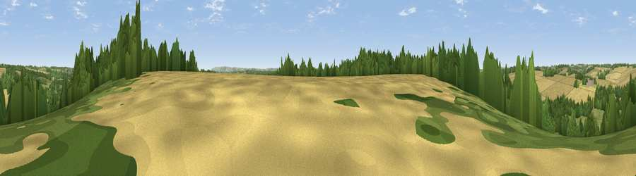

Viewpoint near Ramsbury
#33544 in England · top 67% of its area beats it · near RamsburyWhere it is
The exact computed spot (SU 24925 69675). Click the marker for map links.
The view, rendered

A 360° render of this exact spot computed from the terrain model, tree cover and land cover — summer colours, afternoon light, calibrated against photographs of famous viewpoints. Real trees, hedges and buildings will differ in detail.
The panorama
Grey silhouette: terrain skyline in each direction (720 bearings, Earth curvature and refraction included). Dashed green: skyline with trees (+15 m) and buildings (+8 m) as obstacles. Blue strip: how far the ground is visible on each bearing.
Where the view opens
Wedge length = distance to the farthest visible ground on that bearing (vegetation-aware). Rings at 10, 25 and 50 km.
What fills the view
39% cropland · 31% grassland · 29% woodland ·
Angular shares of the visible panorama (visual magnitude), not map area. Landscape diversity 0.49 (0–1 Shannon).
Key numbers
More beautiful places nearby
The staircase of upgrades: each row has a higher view potential than everything closer. Driving times are estimates from straight-line distance, calibrated against real road routing — check an actual route before setting out.
| Place | Direction | Drive | Score |
|---|---|---|---|
| Viewpoint near Mildenhall | NNW · 3 km | ~7 min | 40.6 |
| Viewpoint near Mildenhall | NW · 3 km | ~8 min | 41.6 |
| Viewpoint near Ogbourne St George | NW · 6 km | ~12 min | 45.9 |
| Viewpoint near Burbage | SSW · 6 km | ~13 min | 46.6 |
| Viewpoint near Ogbourne St George | NW · 8 km | ~16 min | 64.9 |
| Martinsell viewpoint | SW · 9 km | ~18 min | 77.3 |
| Viewpoint near Nympsfield | NW · 55 km | ~77 min | 77.5 |
| Painswick Beacon | NW · 57 km | ~79 min | 79.6 |
51.42554, -1.64290 · source: screening · position refined by local search. Computed location — check access rights before visiting.